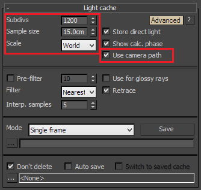

Rendering an Animation with Moving Objects II
Rendering an Animation with Moving Objects II Overview
In this tutorial, we will render an animation with moving objects and camera with GI with V-Ray. In difference from the first animation tutorial , we will use a simpler procedure that does not involve compositing and the VRaySphereFade atmospheric effect, but instead relies on the animation capabilities of the GI engines built into V-Ray in its latest versions.
This tutorial focuses on the irradiance map to gain some speed. If you can afford longer render times, using a simpler approach like Brute force GI for primary rays, and Light cache for secondary rays might prove less complicated and faster to set up.
Basics
In this section, we will discuss what animation capabilities are offered by the GI solutions in V-Ray, specifically the light cache and the irradiance map.
Time-Interpolated Irradiance Maps
Time-interpolated irradiance maps were introduced in V-Ray 2.0 SP2, specifically for animations with moving objects, to reduce flickering of the irradiance map due to different samples between the animation frames. Time-interpolated irradiance maps work by blending samples from several irradiance maps, calculated for each frame. The number of frames that will be blended is controlled by the Interpolation frames parameter.
Rendering with time-interpolated irradiance maps is done in two passes:
-
In the first pass, one irradiance map is calculated for each frame of the animation;
-
The second pass is our final animation rendering, which utilizes the previously generated irradiance maps.
To demonstrate the effect of time-interpolated irradiance maps, below is the same animation, rendered with different settings for the Interpolation frames parameter. The same irradiance maps were used for all three animations. Error rendering macro 'multimedia' : com.atlassian.renderer.v2.macro.MacroException: Cannot find attachment 'imap_0_frames.mov'
Interpolation frames is 0 (equivalent to single-frame irradiance maps). This animation was very fast to render, but there is quite a bit of flickering.
Error rendering macro 'multimedia' : com.atlassian.renderer.v2.macro.MacroException: Cannot find attachment 'imap_2_frames.mov'
Interpolation frames is 2 (which means that a total of 5 irradiance maps are loaded - the map for the current frame, 2 maps before the current frame, and 2 maps after it). This animation was a bit slower to render than the previous one, but the flickering is reduced.
Error rendering macro 'multimedia' : com.atlassian.renderer.v2.macro.MacroException: Cannot find attachment 'imap_5_frames.mov'
Interpolation frames is 5 (a total of 11 irradiance map). This animation was significantly slower to render than the previous two, but it has little flickering. However the GI solution tends to spread a bit in time capturing GI from previous frames or from future frames.
Note how increasing the Interpolation frames also increases the render times, as there are more irradiance samples to process. To reduce the render times a bit, we can reduce the Interpolation samples parameter, which will cause less samples to be looked up from each of the loaded irradiance maps.
Note also that the few frames at the start and at the end of the animation are more blotchy than the middle frames - this is because there are no irradiance maps for the previous (resp. next) frames to use. To avoid this, we need to calculate the irradiance maps for a few frames before and after the actual animation range. The number of extra frames to calculate is determined by the Interpolation frames parameter - if it is set to 2, then we need to calculate irradiance maps for two frames before and two frames after the actual animation range.
The "Use Camera Path" Option
Moving objects are only one of the sources of flickering for animations with the irradiance map. The other source of flickering is camera movement. This is because the irradiance map is calculated by tracing rays from the camera, and if the camera moves, those rays will be different for each frame, causing flickering in the resulting animation.
For scenes without moving objects, where the only thing that changes is the camera, we can deal with this issue by precalculating one irradiance map for the entire animation, as we did in the walk-through animation tutorial . Precalculating the irradiance map fixes the position of the samples and avoids the flickering.
However, if we also have moving objects, we cannot use this approach, as we need a new irradiance map for each frame. What we can do, however, is shoot rays not only for the position of the camera at the current frame, but for the entire camera animation path - similar to what V-Ray does with the Fly-through mode of the light cache, only done for each frame. The Use camera path option, introduced in V-Ray SP3, does exactly that. In this way, the camera rays used for calculating the irradiance map are the same for every single frame of the animation, thus removing flickering caused by camera movement.
Workflow
Now we have all the necessary information to render our animation. Like noted above, we will do this in 2 steps:
-
Step 1: Generate irradiance maps for each frame of the animation, with a few frames before and a few frames after the actual animation range, using the Animation (prepass) mode of the irradiance map along with the Use camera path option and using the light cache as a secondary GI engine, also with the Use camera path option.
-
Step 2: Render our final animation using the Animation (rendering) mode of the irradiance map. There is no need to use a secondary GI engine here, as we only need it to calculate the irradiance map in the first step.
Compare the simplicity of this workflow with the process described in the first animation tutorial . Of course, for very complicated and large scenes, rendering one light cache and one irradiance map per frame might still be very time consuming - in this case, the compositing method is still a better choice for reducing render times.
1. Generating the irradiance maps
1.1. Open the starting scene which can be found here.
1.2. Open the Render Settings dialogue and go to the Indirect Illumination tab.
1.3. Enable the GI.
1.4. For the Primary bounces, select Irradiance map from the drop down menu.
1.5. For Secondary bounces, select Light Cache from the drop down menu.
1.6. Set up the Irradiance Map.
1.6.1. From the Build-in presets, select Medium-animation.
1.6.2. Leave the HSph. subdivs to the default value of 50.
1.6.3. Click on the UI switcher to go to the Advanced view of the irradiance map rollout and check the Use camera path option.
1.6.4. Select the Animation (prepass) mode from the Mode drop down menu.
1.6.5. Specify a location for the irradiance maps to be saved in.
1.7 Set up the Light Cache.
1.7.1. Set the Subdivs to 1200.
1.7.2. Set the Scale to World. We are using the world scale because this is the appropriate mode for animations where the camera is moving. World scale ensures that Light Cache samples in the scene are going to have the same size.
1.7.3. Set the Sample size to 15cm.
1.7.4. Click the UI switcher to show the Advanced view of the light cache rollout and check the Use camera path option.

1.8 Render the whole animation.
The following table summarizes the settings for the GI.
|
GI Settings |
|
|
Primary Engine |
Irradiance Map |
|
Secondary Engine |
Light Cache |
|
Irradiance Map Settings: |
|
|
Preset |
Medium (animation) |
|
HSph. Subdivs |
50 |
|
Use camera path |
On |
|
Mode |
Animation (prepass) |
|
Light Cache Settings |
|
|
Subdivisions |
1200 |
|
Sample Size |
15cm |
|
Scale |
World |
|
Use Camera Path |
On |
|
Mode |
Single Frame |
During the prepass V-Ray will only calculate the GI and not render the final image. The following images show the building of the Light Cache and Irradiance Maps respectively.

2. Rendering the final animation
Once the prepass is complete, proceed to render the final animation.
2.1. Turn off the Light Cache - Go to the Render Setup dialogue and from the Global Illumination tab set the Secondary bounces GI engine to None.
2.2. Set up the irradiance map.
2.2.1. In the Irradiance Map settings, set the Mode to Animation (rendering). You will be prompted to specify the location of the irradiance maps that were created in the previous pass. Specify the path and select the first irradiance map.
2.2.2. Set the Interp. samples to 5. It controls the number of GI samples from each irradiance map that will be used to interpolate the indirect illumination at a given point. Since we are using several irradiance maps for the rendering, we can decrease that parameter depending on the settings for the Interp. frames.
2.2.3. Leave the Interp. frames to 2. It controls how many irradiance maps are going to be used for rendering one frame of the animation. Larger values will use more irradiance maps. This makes the whole animation smoother. However, values that are too large can produce some strange results, especially if you have fast moving objects. Usually the default value of 2 is sufficient. It means that 5 maps will be used for each frame of the animation. If you need to increase this setting, it is not advisable to enter values larger than 4.
2.3. Render the animation starting from the third frame and ending at the 198th frame. This is because we need the irradiance maps for some frames before and after the current one; if we just render frames 0-200, we will get a bit noisier results for the first two and the last two frames.
Error rendering macro 'multimedia' : com.atlassian.renderer.v2.macro.MacroException: Cannot find attachment 'interp_imap_final.mov'
Conclusion
In this tutorial, we described a relatively easy way to render animations with both moving objects and camera. The method is still more computationally expensive than splitting the scene into static and moving sections and compositing, but is much easier to organize and implement.